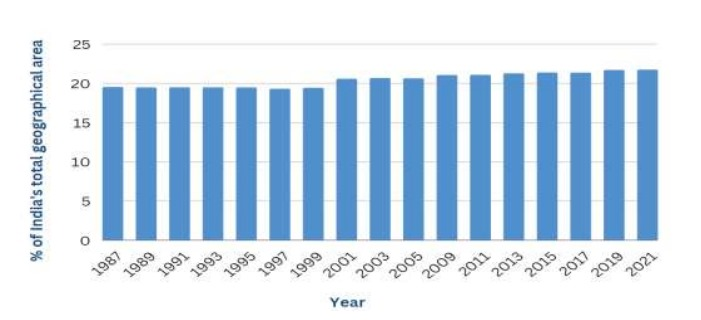
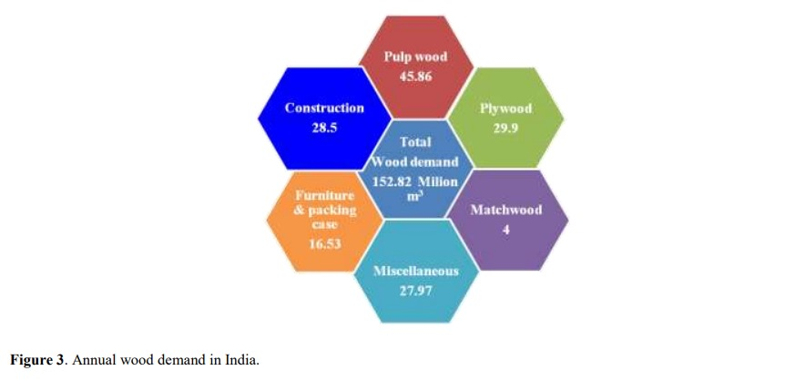

Forest coverd area
Forestry in India is a significant rural industry and a major environmental resource. India is one of the ten most forest-rich countries of the world.Together, India and 9 other countries account for 67 percent of the total forest area of the world. India's forest cover grew at 0.20% annually over 1990–2000, and has grown at the rate of 0.7% per year over 2000–2010, after decades where forest degradation was a matter of serious concern.
As of 2010, the Food and Agriculture Organization of the United Nations estimates India's forest cover to be about 68 million hectares, or 22% of the country's area The 2013 Forest Survey of India states its forest cover increased to 69.8 million hectares by 2012, per satellite measurements; this represents an increase of 5,871 square kilometers of forest cover in 2 years. However, the gains were primarily in northern, central and southern Indian states, while northeastern states witnessed a net loss in forest cover over 2010 to 2012. In 2018, the total forest and tree cover in India increased to 24.39% or 8,02,088 km2.It increased further to 24.56 percent or 807,276 square kilometres in 2019.
Different forest classes of India
| Class | Area (in sq km) | Percentage of Geographical Area |
| Very Dense Forest | 99,779 | 3.04 |
| Moderately Dense Forest | 3,06,890 | 9.33 |
| Open Forest | 3,07,120 | 9.34 |
| Total Forest Cover | 7,13,789 | 21.71 |
| Scrub | 46,539 | 1.42 |
| Non-Forest | 25,27,141 | 76.87 |
| Total Geographical Area | 32,87,469 | 100.00 |
Forest cover over states
Forestry in India is a significant rural industry and a major environmental resource. India is one of the ten most forest-rich countries of the world. Together, India and 9 other countries account for 67 percent of the total forest area of the world.India's forest cover grew at 0.20% annually over 1990–2000, and has grown at the rate of 0.7% per year over 2000–2010, after decades where forest degradation was a matter of serious concern.
| State/UT | Forest cover (sq km) | Geographical area (sq km) | Forest cover % (of geographical area) |
| Andhra Pradesh | 29,784 | 1,62,968 | 18.28 % |
| Arunachal Pradesh | 66,431 | 83.743 | 79.33 % |
| Assam | 28,312 | 78,438 | 36.09 % |
| Bihar | 7,381 | 94,163 | 7.84 % |
| Chhattisgarh | 55,717 | 1,35,192 | 41.21 % |
| Goa | 2,244 | 3,702 | 60.62 % |
| Gujarat | 14,926 | 1,96,244 | 7.61 % |
| Haryana | 1,603 | 44,212 | 3.63 % |
| Himachal Pradesh | 15,443 | 55,673 | 27.73 % |
| Jharkhand | 23,721 | 79,716 | 29.76 % |
| Karnataka | 38,730 | 1,91,791 | 20.19 % |
| Kerala | 21,253 | 38,852 | 54.70 % |
| Madhya Pradesh | 77,493 | 3,08,252 | 25.14 % |
| Maharashtra | 50,798 | 3,07,713 | 16.51 % |
| Manipur | 16,598 | 22,327 | 74.34 % |
| Meghalaya | 17,046 | 22,429 | 76.00 % |
| Mizoram | 17,820 | 21,081 | 84.53 % |
| Nagaland | 12,251 | 16,579 | 73.90 % |
| Odisha | 52,156 | 1,55,707 | 33.50 % |
| Punjab | 1,847 | 50,362 | 3.67 % |
| Rajasthan | 16,655 | 3,42,239 | 4.87 % |
| Sikkim | 3,341 | 7,096 | 47.08 % |
| Tamil Nadu | 26,419 | 1,30,060 | 20.31 % |
| Telangana | 21,214 | 1,12,077 | 18.93 % |
| Tripura | 7,722 | 10,486 | 73.64 % |
| Uttar Pradesh | 14,818 | 2,40,928 | 6.15 % |
| Uttarakhand | 24,305 | 53,483 | 45.44 % |
| West Bengal | 16,832 | 88,752 | 18.96 % |
| Andaman and Nicobar Islands | 6,744 | 8,249 | 81.75 % |
| Chandigarh | 22.88 | 114 | 20.07 % |
| Dadra and Nagar Haveli and Daman and Diu | 227.75 | 602 | 37.83 % |
| Delhi | 195 | 1,483 | 13.15 % |
| Jammu and Kashmir | 21,387 | 54,624 | 39.15 % |
| Lakshadweep | 27.10 | 30 | 90.33 % |
| Ladakh | 2,272 | 1,68,055 | 1.35% |
| Puducherry | 53.30 | 490 | 10.88 % |
Forest cover over years
Forest cover over years
| Tropical Wet Evergreen Forests | Area (in square kilometres) | Percentage of total forest |
| Tropical Wet Evergreen Forests | 51,249 | 8.0 |
| Tropical Semi Evergreen Forests | 26,424 | 4.1 |
| Tropical Moist Deciduous Forests | 2,36,794 | 37.0 |
| Littoral & Swamp Forests | 4,046 | 0.6 |
| Tropical Dry Deciduous Forests | 1,86,620 | 28.6 |
| Tropical Thorn Forests | 16,491 | 2.6 |
| Tropical Dry Evergreen Forests | 1,404 | 0.2 |
| Subtropical Broadleaved Hill Forests | 2,781 | 0.4 |
| Subtropical Pine Forests | 42,377 | 6.6 |
| Subtropical Dry evergreen Forests | 12,538 | 2.5 |
| Montane Wet Temperate Forests | 23,365 | 3.6 |
| Himalayan Moist Temperate Forests | 12,012 | 3.4 |
| Himalayan Dry Temperate Forests | 312 | 0.0 |
| Sub Alpine Forests | 18,628 | 2.9 |
| Total (Forest Cover + Scrub) | 7,54,252 | 98.26 |
| Grass land in different forest type groups (without forest cover) | 13,329 | 1.74 |
| Grand Total | 7,67,581 | 100.00 |
Annual wood demand in India
Different sources of wood million m3